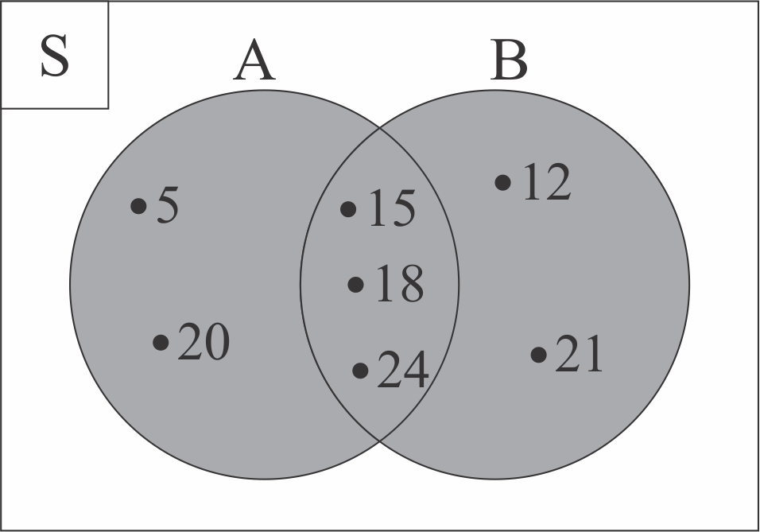

4.2 GABUNGAN HIMPUNAN

Kemudian, bagaimana diagram venn dari gabungan himpunan? Perhatikanlah Tabel 4.2.1 di bawah ini!
| Himpunan | Diagram Venn |
|---|---|
|
A = {5, 15, 18, 20, 24} dan B = {12, 15, 18, 21, 24} Karena himpunan A dan himpunan B memiliki anggota yang sama, maka lingkaran A dan lingkaran B digambarkan saling beririsan dan anggota yang sama tersebut cukup ditulis sekali saja. Sehingga, A ∪ B = {5, 12, 15, 18, 20, 21, 24} |
 |
| Lingkaran A dan lingkaran B diarsir untuk menandakan bahwa area yang diarsir tersebut merupakan gabungan himpunan A dan B. | |
Untuk lebih lengkapnya mengenai proses menggambar diagram venn dari gabungan himpunan, perhatikanlah animasi interaktif di bawah ini!
 Petunjuk (klik untuk menyembunyikan petunjuk)
Petunjuk (klik untuk menyembunyikan petunjuk)- Tekan icon
 . Jika animasi belum muncul, harap tunggu sebentar ya 😄
. Jika animasi belum muncul, harap tunggu sebentar ya 😄 - Tekan tombol "Mulai" pada layar animasi interaktif untuk memulai. Perhatikanlah setiap arahan yang ditampilkan
- Praktikanlah juga pada buku catatanmu 😄

*catatlah ke dalam buku catatanmu 😄
Rumus untuk menentukan banyak anggota himpunan gabungan, misal pada himpunan A dan himpunan B adalah n(A ∪ B) = n(A) + n(B) – n(A ∩ B)